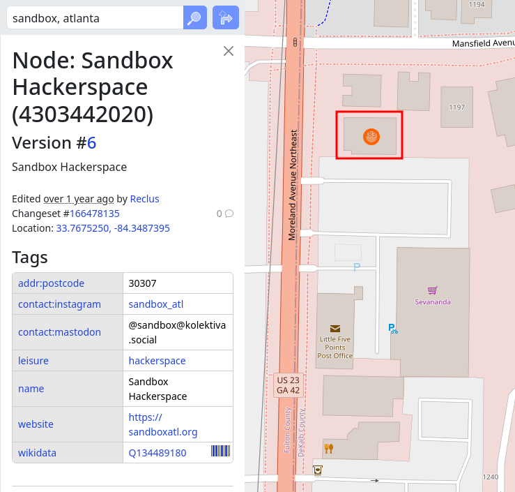

October and henseforth: we're meeting at Sandbox, 483 Moreland Ave NE Ste 3, Atlanta, GA 30307.

/about
2600 is a community of computer and security enthusiasts in the DEF CON lineage. The name comes from the 2600 Hz touch-tone signal used by blue boxes, and the group is based on the 2600 magazine, a hacker publication from the 1980s and 1990s. The Atlanta chapter formed in the early 1990s. The wider 2600 community is at 2600.org.
/meetings
Our meetings are held at 6pm on the first Friday of every month. Feel free to drop in any time! The in-person meetings are at Sandbox.
Sandbox483 Moreland Ave NE Ste 3
Atlanta, GA 30307
All ages/skill levels welcome. No dues, feel free to bring new friends.
The most-used chat mechanism between meetings is the Atlanta CyberSecurity Engineers discord server. An invite is available at discord.gg/5Q5xmUHqGX.
There is often a mini-ctf called NetKotH, so bring a machine with Kali Linux installed, and try to get your handle on the scoreboard. If you want a buddy don't be afraid to ask, the only things we byte are chips!
/friends
-
dc404 (Atlanta)
Atlanta local defcon group, meets at Manuel's tavern on the 3rd Saturday of the month. This is pretty active, and we talk about a wide range of things. dc404.org
-
dc770 (Cartersville)
Meets in the basement room of Jefferson's on the first Tuesday of the month. dc770.org
-
ACE678 (Marietta)
Meets at the Marietta Burger Bar on the second Wednesday of the month. dc678.org/
-
Atlanta Women in Cyber (Atlanta)
Meets monthly at FiNCA TO FiLTER in O4W. linkedin.com/company/atlanta-women-in-cyber/
/events
BSides Atlanta
Usually once a year, somebody throws a BSides conference in Atlanta. In 2015, it happened at Atlanta Tech Village, and was a heck of a good time. For a while it was at Kennesaw State University, and this year it's at the Georgia Tech Conference Center. See related: brimstone.github.io/#!/events/2015/03/bsidesatl.md